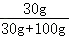
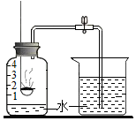
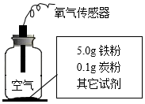

2021年北京市中考化学真题 · 选择题 第21、22、23、24、25题 · 对应解析
21．所得溶液中，溶质与溶剂的质量比为1：2的是（ ）
A．①B．②C．③D．④
【分析】根据20℃时MgCl2的溶解度数值和溶质与溶剂的质量比进行分析判断。
【解答】解：因为20℃时，MgCl2的溶解度为54.6g，所以①②③都属于不饱和溶液，而只有③溶液中溶质与溶剂的质量比为50：100＝1：2。
故选：C。
【点评】此题考查溶解度与溶解性问题，关键是根据溶解度判断是否是饱和溶液解答。
22．①中溶质的质量分数约为（ ）
A．23%B．30%C．35%D．43%
【分析】根据溶液中，溶质的质量分数＝×100%来分析。
【解答】解：已知：20℃时，MgCl2的溶解度为54.6g。因此，20℃时，将30g氯化镁放入到100g水充分搅拌得到的是该温度下，氯化镁的不饱和溶液，溶液中溶质的质量分数为：

×100%≈23%。故选：A。
【点评】本题考查了溶质质量分数的计算方法，难度不大。
23．所得溶液中，属于饱和溶液的是（ ）
A．①B．②C．③D．④
【分析】根据溶解度分析即可。
【解答】解：因为20℃时，MgCl2的溶解度为54.6g，即20℃时，100g水中最多溶解54.6gMgCl2，又因为60g＞54.6g，所以属于饱和溶液的是④。
故选：D。
【点评】此题考查溶解性与溶解度等问题，关键是根据溶解度的大小判断。
24．用如图装置可验证空气中O2的含量。下列现象能表明O2含量的是（ ）

A．集气瓶中产生大量白烟
B．红磷燃烧一段时间后熄灭
C．烧杯中的水倒吸进入集气瓶
D．集气瓶中水面最终上升至1处
【分析】根据实验的现象来分析。
【解答】解：A、集气瓶中产生大量白烟，只能说明五氧化二磷是白色固体，不能证明空气中O2的含量，说法错误；
B、红磷燃烧一段时间后熄灭，说明氧气耗尽，不能证明空气中O2的含量，说法错误；
C、烧杯中的水倒吸进入集气瓶，说明瓶内气压降低，但不能证明空气中O2的含量，说法错误；
D、瓶中液面最终上升至1处，说明氧气约占空气总体积的，能证明空气中O2的含量，说法正确；
故选：D。
【点评】本题难度不大，掌握用燃烧法测定空气中氧气含量的实验原理、注意事项等是正确解答是关键。
25．实验研究铁锈蚀影响因素，记录如下。下列分析不正确的是（ ）
实验装置 | 序号 | 其他试剂 | 200s时O2的含量 |
 | ① | 干燥剂 | 21% |
② | 10滴水 | 15% | |
③ | 10滴水和1.0g食盐 | 8% |
A．②③中O2含量减少表明铁已锈蚀
B．①②证明水对铁锈蚀有影响
C．②③证明食盐能加快铁锈蚀
D．①②③证明炭粉对铁锈蚀有影响
【分析】根据铁在与氧气和水蒸气同时接触时会发生锈蚀来分析。
【解答】解：①加入干燥剂后，铁粉不会锈蚀；②加入10滴水后，铁粉慢慢锈蚀；③加入10滴水和1.0g食盐，铁粉很快锈蚀。
A.铁粉锈蚀需要消耗氧气，所以②③中O2含量减少表明铁已锈蚀，选项A说法正确；
B.①加入干燥剂后，铁粉不会锈蚀；②加入10滴水后，铁粉慢慢锈蚀，因此①②证明水对铁锈蚀有影响，选项B说法正确；
C.②加入10滴水后，铁粉慢慢锈蚀；③加入10滴水和1.0g食盐，铁粉很快锈蚀，因此②③证明食盐能加快铁锈蚀，选项C说法正确；
D.对比三个实验，并不能证明炭粉对铁锈蚀有影响。选项D说法错误。
故选：D。
【点评】合理设计实验，科学地进行实验、分析实验，是得出正确实验结论的前提，因此要学会设计实验、进行实验、分析实验，为学好化学知识奠定基础。
二、第二部分本部分共14题，共45分。【生活观象解释】